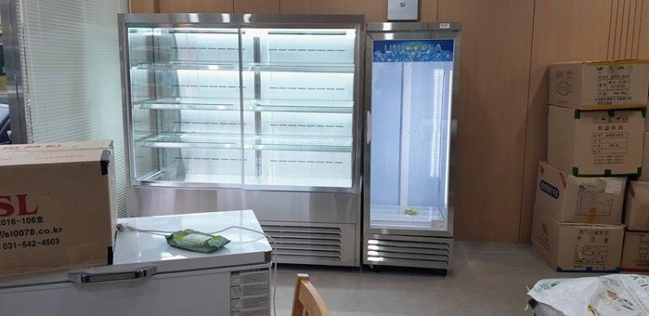
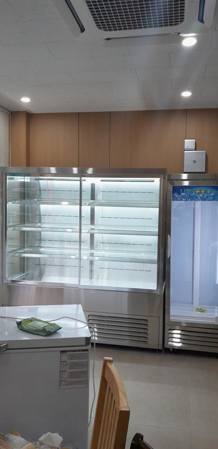
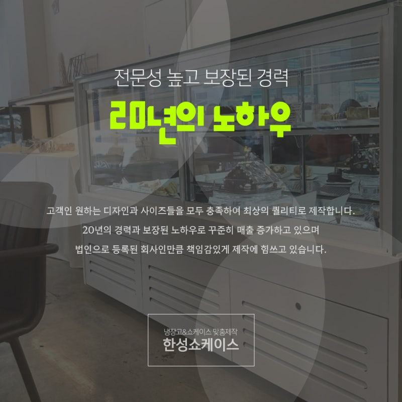
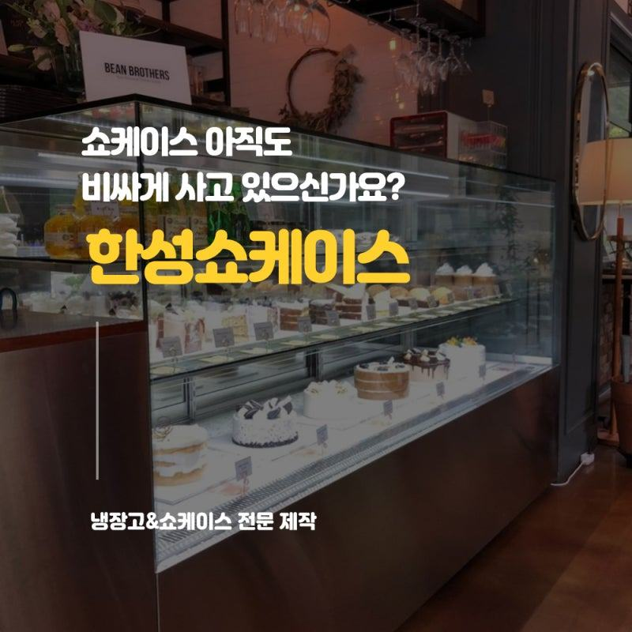
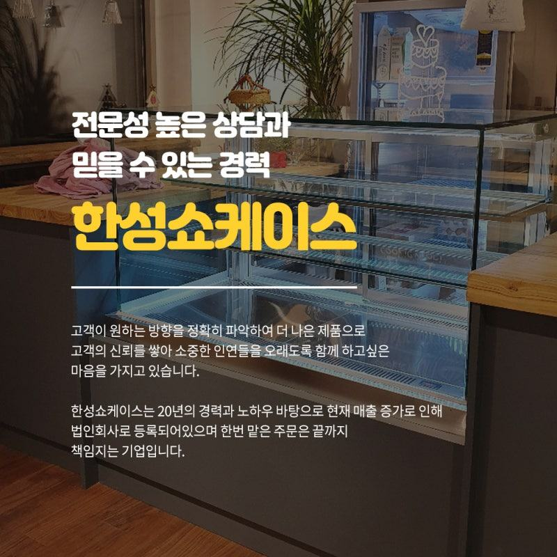

한성제품
냉장쇼케이스 고르는법, 견적 비교 전에 볼 다섯 가지

냉장쇼케이스는 무엇을 진열할지부터 정하고, 그 상품에 맞는 냉기 흐름·단 높이·조명·문 방식을 고른 뒤 A/S 체계를 확인하는 순서로 고르시면 됩니다. 가격 비교는 이 조건이 같은 제품끼리 해야 의미가 있습니다.
안녕하세요. 매장 크기와 업종에 맞춰 냉장쇼케이스를 직접 만드는 한성쇼케이스입니다.
창업 준비로 바쁜 사장님들은 견적서 몇 장을 받아 놓고 금액과 크기만 나란히 비교하시는 경우가 많습니다.
그런데 막상 들여놓고 나면 단 높이가 상품과 안 맞거나, 조명 때문에 상품 색이 이상하게 보인다는 이야기를 꽤 자주 듣습니다.
쇼케이스는 상품을 차갑게 보관하는 일과 손님 눈길을 끄는 일을 동시에 해야 하는 장비입니다. 둘 중 하나만 보고 고르면 반쪽짜리 선택이 되기 쉽죠.
오늘은 냉장쇼케이스를 비교할 때 순서대로 확인하면 좋은 다섯 가지 기준을 정리해 보겠습니다.
1. 진열할 상품부터 적어 보기
같은 냉장쇼케이스라도 케이크, 반찬, 음료, 생화처럼 담는 상품에 따라 필요한 조건이 전혀 다릅니다.
표면이 마르면 안 되는 상품인지, 병이나 캔처럼 세워 두는 상품인지, 하루에 몇 번씩 채워 넣어야 하는지를 먼저 적어 보세요.
이 목록이 있어야 용량도 정할 수 있습니다. 크기가 너무 크면 상품을 다 채워도 빈 곳이 보여 매장이 허전해 보이고, 너무 작으면 영업 중에 계속 보충하느라 일손이 묶입니다.
- 가장 많이 팔 상품 세 가지를 적어 보세요.
- 상품 높이와 용기 크기를 재 두세요.
- 하루 보충 횟수를 대략 정해 두세요.
2. 냉기 흐름과 냉각 방식
냉기가 한쪽으로만 몰리면 위아래 칸의 온도 차가 커지고, 찬바람이 상품에 직접 닿으면 표면이 쉽게 마릅니다.
매장에서 샘플을 보실 때 냉기가 어디서 나와 어디로 빠지는지 손을 대 보시면 차이를 금방 느끼실 수 있습니다.
모터가 본체 안쪽에 들어가는 내치형은 진동과 열이 진열 공간으로 덜 전해지는 편이라 조용한 매장에서 많이 찾으십니다.
냉각 방식이 간냉식인지 직냉식인지도 견적서에 꼭 적어 달라고 하세요.


3. 단 높이와 선반 구성
기성품은 단 높이가 정해져 있어서 키 큰 상품을 넣으면 윗칸과 아랫칸 중 하나를 비워 두게 됩니다. 맞춤 제작이라면 상품 높이에 맞춰 단을 정할 수 있어 같은 크기에서도 진열량이 달라집니다.
유리선반은 아랫칸까지 시야가 트여 품목이 많은 매장에 잘 맞고, 손님 눈높이에 가장 잘 팔리는 상품이 오도록 단을 배치하면 진열 효과가 커집니다.
4. 조명 색과 외관 색
쇼케이스 안의 LED 조명은 상품 색을 그대로 손님 눈에 전달하는 역할을 합니다. 음식은 백색 조명에서 색감이 자연스럽게 보이는 경우가 많고, 상품에 따라 다른 색을 쓰기도 하니 실제 상품을 넣고 비춰 보는 게 가장 확실합니다.
외관 색도 매장 분위기를 좌우합니다. 화이트는 밝고 깨끗한 인상을 주고, 블랙은 주변 매장과 다른 느낌을 내기 좋습니다.
인테리어 시안이 있다면 상담 때 함께 보여 주세요.
- 실제 상품을 넣고 조명 색을 확인하세요.
- 인테리어 시안이나 매장 사진을 준비하세요.
5. 만든 곳과 고치는 곳이 같은지
쇼케이스는 매일 쉬지 않고 돌아가는 장비라 언젠가는 점검이 필요합니다. 판매만 하는 곳인지, 직접 제조하고 사후 관리까지 맡는 곳인지에 따라 고장 났을 때 대응 속도가 달라집니다.
가능하다면 공장이나 전시장을 방문해 샘플의 마감, 문 닫히는 느낌, 조명 색을 직접 보세요. 사진으로는 알 수 없는 차이가 눈에 들어옵니다.
체크리스트
- 진열 상품 목록과 상품 높이
- 냉기 흐름과 간냉식·직냉식 여부
- 모터 위치(내치형 여부)
- 단 높이·선반 소재
- 조명 색과 외관 색
- 제조사 직접 A/S 여부
현장에서 자주 보는 경우: 기성품 크기에 매장을 맞추다 공간이 남는 1인 매장
혼자 창업하시는 사장님들이 정해진 규격의 기성품을 먼저 들이고 나서 상담을 오시는 경우가 있습니다. 매장 폭과 맞지 않아 옆에 애매한 틈이 남거나, 인테리어 색과 어울리지 않아 쇼케이스만 따로 노는 모습이 되는 것이죠.
이럴 때 상담에서는 원하는 규격, 디자인, 색상, 단 높이를 하나씩 정해 맞춤 제작으로 진행합니다. 공장에 오시면 여러 샘플을 직접 보고 고르실 수 있어서 인테리어와 맞추기가 훨씬 수월하고, 설치 후에는 제조사 엔지니어가 직접 방문해 사후 관리를 맡습니다.





자주 묻는 질문
기성품과 맞춤 제작 중 어느 쪽이 나을까요?
매장 폭과 상품 높이가 기성품 규격에 딱 맞는다면 기성품도 괜찮습니다. 공간이 남거나 단 높이가 안 맞는다면 맞춤 제작이 진열량과 동선 면에서 유리합니다.
샘플을 직접 볼 수 있나요?
공장에 방문하시면 여러 쇼케이스 샘플을 직접 보고 상담받으실 수 있습니다. 방문 전에 대표전화 031-986-2458로 일정을 잡아 주시면 편합니다.
견적 받을 때 무엇을 알려 드리면 되나요?
설치할 자리의 실측 치수, 진열할 상품 종류, 원하는 색상과 조명을 알려 주시면 됩니다. 매장 사진이 있으면 구성을 잡는 데 도움이 됩니다.
매장 조건에 맞춰 만드는 한성쇼케이스
원하시는 제품 사진과 설치할 공간 사진만 보내 주셔도 매장에 맞는 구성을 추천해 드립니다.
- 전국 240여 개 A/S 전담 센터 운영
- 본사 대량 자재 매입으로 품질 대비 합리적인 가격
- 유럽제·삼성 냉각 콤프레셔 적용
- 국내 최초 쇼케이스 전문 디자이너 상주
매장 폭과 원하는 진열 구성을 알려 주세요. 실측과 견적을 안내해 드립니다.
031-986-2458